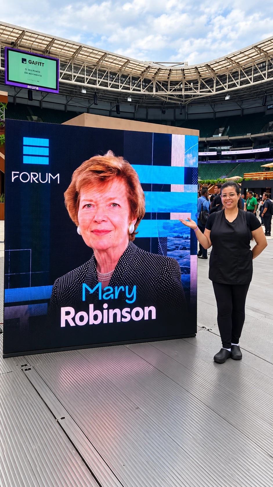
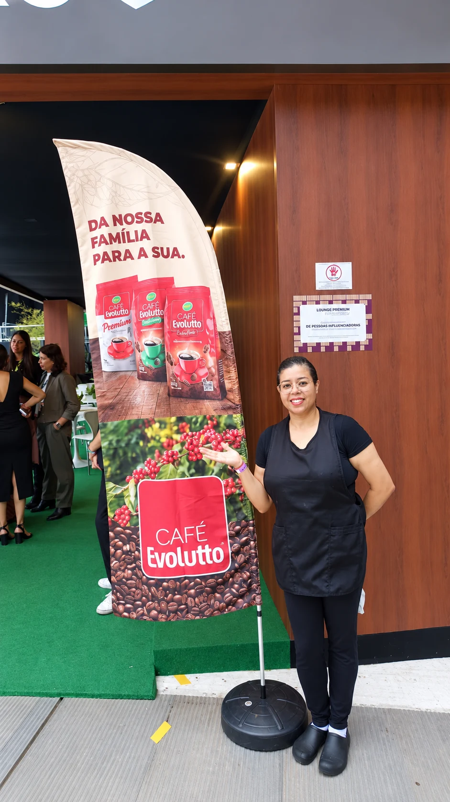
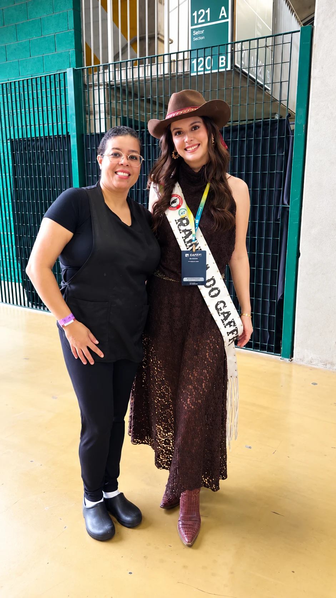
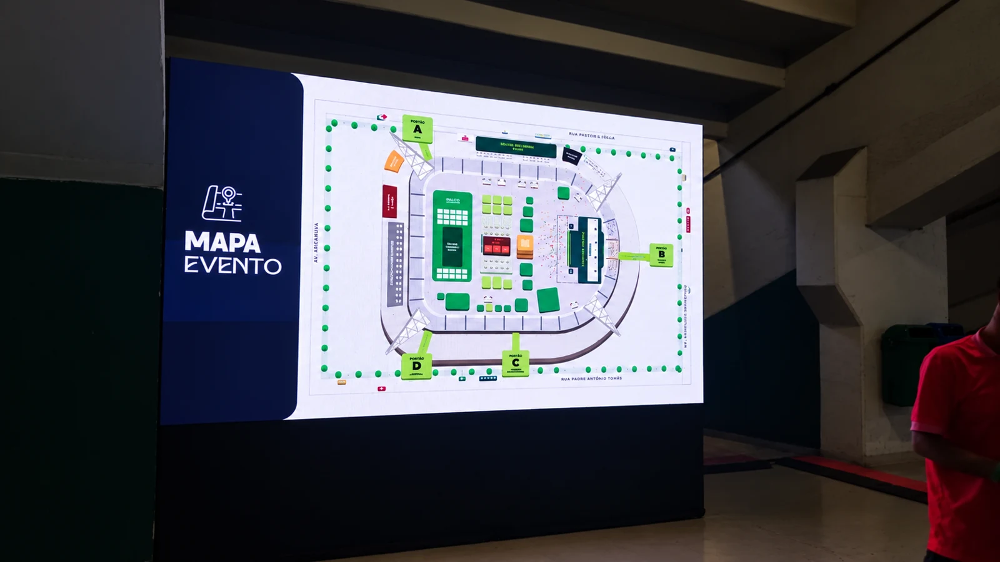

Setembro de 2026
Maroon 5
Nubank Parque
Portfólio de experiências
Shows, festivais e festas. Aqui estão os registros, do mais recente ao mais antigo.
CTN
Promotora
Atuei como promotora no show do Eduardo Costa, no CTN.
Trabalho em destaque · 1º e 2 de outubro de 2026
Nos dias 1º e 2 de outubro de 2026, trabalhei como auxiliar de cozinha no GAFFFF, no Nubank Parque, em São Paulo. Foi um evento de grande porte, e cada hora na cozinha contou.
Fotos e vídeos registrados em 1º de outubro de 2026.




Dois vídeos do primeiro dia pra você sentir o clima do festival.
Nubank Parque
Registros do preparo e da finalização de alimentos nos bastidores do show.
Nubank Parque
Auxiliar de cozinha
Ajudei no preparo dos alimentos da cozinha para o show.
Neo Química Arena
Atendente de bar
Atendimento no bar do Tardezinha, na Neo Química Arena.
Nubank Parque
Atendente de bar
Atendimento de bar na turnê de despedida SPC Acústico 2 – O Último Encontro, nos dias 5 e 6 de abril, em São Paulo. Sem fotos desse, mas faz parte da minha história.
Autódromo de Interlagos
Garçonete de camarote
Atendimento no camarote do Afterlife 2024.
Puxador humano no Carnaval
Puxador humano no bloco de Carnaval.
Organização e decoração
Organizei e decorei um chá revelação.
Projeto em parceria com o Instituto Center Norte, a ETEC Parque da Juventude e a Ideias do Futuro.
Outros registros
Registros de eventos em que estive presente.
Setembro de 2026
Nubank Parque
2023
Data não informada
ETEC Parque da Juventude
Outras experiências
Registros de atendimento, montagem, cozinha e acolhimento.
Recepção e atendimento
Bar, camarote e áreas VIP
Salão, restaurantes e buffet
Festas particulares e infantis
Monto a mesa de doces, organizo os materiais e preparo o espaço de festas infantis e celebrações de família. Durante a festa, ajudo no salão e reponho o que faltar, conforme o combinado.
Produção e bastidores
Produtos e ações promocionais
Eventos corporativos e temáticos
Apoio em eventos corporativos, festas temáticas e datas especiais, organizando mesas e espaços de atendimento.
Passeios e acolhimento
Trabalhei com a Estrada de Ferro Perus-Pirapora, em São Paulo, recebendo visitantes e guiando grupos no passeio.
Vamos conversar?
Informe o nome da empresa e a região. Você segue direto para o WhatsApp e lá combinamos data, local, horário e funções.